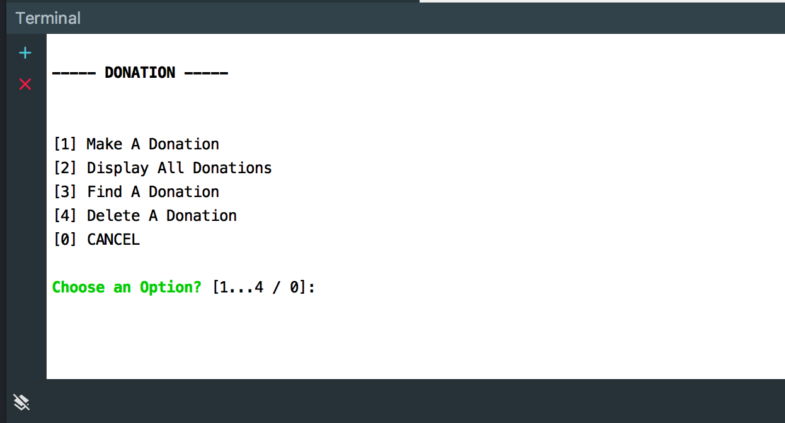
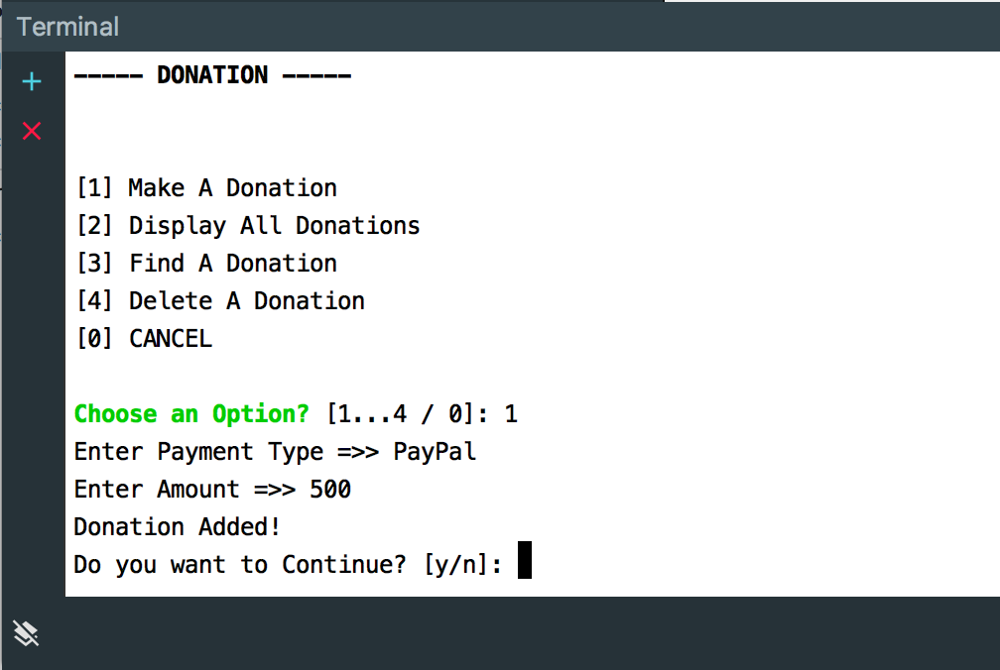
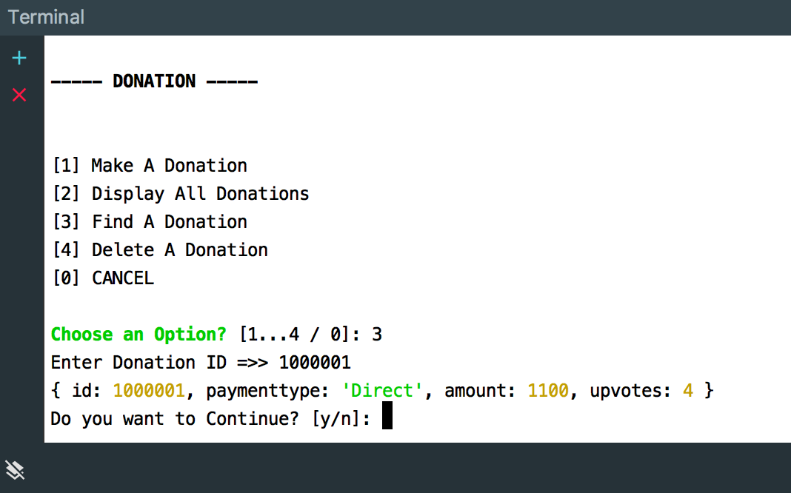
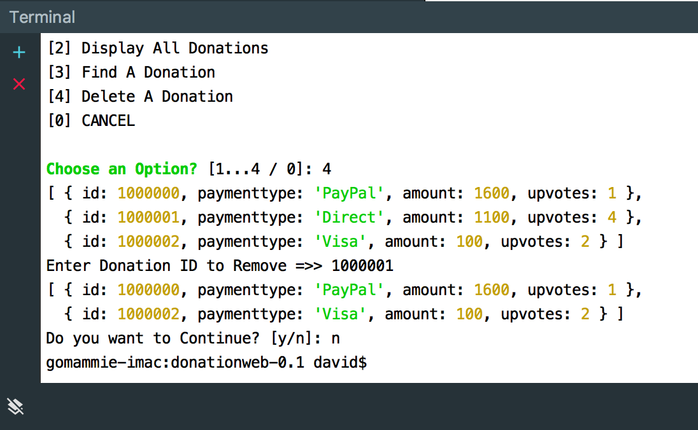

In these labs we're going to build a very simple Console Version of our Node Web App (while we learn about Web Apps) using WebStorm.
If you haven't done so already, download Atom here . This app won't have any web functionality at all but it will take you through a brief look at using javascript and callbacks in a Node Console App.
Once completed and running via WebStorm, your App Menu will look something like this

In this Lab, you will continue to build a simple Node Console App (using WebStorm), called DonationWeb.0.1. We will use the WebStorm IDE just to get used to using the environment.
On completion of this lab you'll be able to
We're going to continue with our DonationWeb.0.1 console app and in this step we'll look at adding a Donation to our existing list and allow our updated list to be searched for a particular donation. Remember though, this will only exist for the duration of the app running (but we'll introduce persistence later on in the module).
First thing to do is open up your existing project (if you haven't done so already) and run it again, to ensure everything is working ok.
Next, add the following 'helper function' to your index.js to allow us to search for (or filter out) a single donation from our array of donations
function getByValue(array, id) {
var result = array.filter(function(obj){return obj.id == id;} );
return result ? result[0] : null; // or undefined
}It takes the array to search, and the 'id' of the donation to search for - you will use this later on.
Now, add the following function stub to eventually allow the user to add a donation to the existing list of donations
function addDonation() {
//Add a new donation to our list
//Randomly generate an id
let id = Math.floor((Math.random() * 10000000) + 1);
let currentSize = donations.length;
let donation = {};
// Create a new donation Object here,
// Set it's id to the randomly generated id above,
// Prompt the user for Payment Type & Amount,
// Set the upvotes to a default value, and then
// add the donation object to the array of donations.
// You should also inform the user whether the 'add'
// has been successful or not?
}Here's an idea of what you should be getting once you've implemented this step correctly

Now, once we've added a Donation, it would be useful to be able to search our list so, using the getByValue() function above complete the following function
function findDonation() {
// Prompt the user for the id to search for and
// display to the user if found
// Display a suitable message if not found
}so the user sees something like this

To delete a donation we'll make use of another 'helper' method - remove()
function remove(array, element) {
const index = array.indexOf(element);
if (index !== -1) {
array.splice(index, 1);
}
}So using the method above, complete the following function
function deleteDonation() {
// Prompt the user for the id to delete
// Find that donation and 'remove' it from the list
// using the remove method supplied.
// Make sure to display the list before and after a
// successful delete or a suitable message otherwise
}so that we have something like this - note we display the list of donations before AND after the deletion.

const chalk = require('chalk');
const readlineSync = require('readline-sync');
let donations = [
{id: 1000000, paymenttype: 'PayPal', amount: 1600, upvotes: 1},
{id: 1000001, paymenttype: 'Direct', amount: 1100, upvotes: 4},
{id: 1000002, paymenttype: 'Visa', amount: 100, upvotes: 2}
];
function getByValue(array, id) {
var result = array.filter(function(obj){return obj.id == id;} );
return result ? result[0] : null; // or undefined
}
function remove(array, element) {
const index = array.indexOf(element);
if (index !== -1) {
array.splice(index, 1);
}
}
function addDonation() {
//Add a new donation to our list
let id = Math.floor((Math.random() * 10000000) + 1); //Randomly generate an id
let currentSize = donations.length;
let donation = {};
donation.id = id;
donation.upvotes = 1;
donation.paymenttype = readlineSync.question('Enter Payment Type =>> ');
donation.amount = readlineSync.question('Enter Amount =>> ');
donations.push(donation);
if((currentSize + 1) == donations.length)
console.log('Donation Added!');
else
console.log('Donation NOT Added!');
}
function continueYN() {
if (readlineSync.keyInYN('Do you want to Continue?'))
// 'Y' key was pressed.
displayMenu();
else
// Another key was pressed.
process.exit(0);
}
function findDonation() {
let id = readlineSync.question('Enter Donation ID =>> ');
let donation = getByValue(donations,id);
if(donation != null)
console.log(donation);
else
console.log('Donation NOT Found!');
}
function deleteDonation() {
console.log(donations);
let id = readlineSync.question('Enter Donation ID to Remove =>> ');
let donation = getByValue(donations,id);
if(donation != null) {
remove(donations,donation);
console.log(donations);
}
else
console.log('Donation NOT DELETED!');
}
function displayMenu() {
let choice;
let options = ['Make A Donation', 'Display All Donations', 'Find A Donation', 'Delete A Donation'];
console.log('\x1Bc'); // Clear the Screen
console.log(chalk.bold('----- DONATION -----'));
console.log('');
choice = readlineSync.keyInSelect(options, chalk.green.bold('Choose an Option?'));
if(choice+1 == 1)
addDonation();
else if(choice+1 == 2)
console.log(donations);
else if(choice+1 == 3)
findDonation();
else if(choice+1 == 4)
deleteDonation();
else
return process.exit(0);
continueYN();
}
displayMenu();